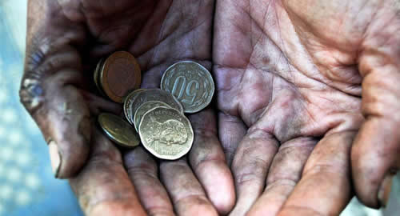

Real Chubut - Agencia de Noticias


El 1% más rico del planeta acumula más riqueza que el resto de la humanidad

La ONG internacional Oxfam reveló que el 82% de la riqueza mundial generada en 2017 fue a manos del 1% más rico de la población mundial, mientras el 50% más pobre, unas 3.700 millones de personas, no se benefició lo más mínimo de este crecimiento.
En el marco del Foro Económico Mundial de Davos que se celebra en Suiza, Oxfam ventiló su habitual informe anual sobre las desigualdades extremas, la pobreza y los multimillonarios. "El año pasado se produjo el mayor aumento de la historia en el número de personas cuyas fortunas superan los mil millones de dólares, con un nuevo milmillonario cada dos días", reveló la entidad sin fines de lucro.
La organización presentó el informe "Premiar el trabajo, no la riqueza" ante decenas de líderes políticos y empresariales de todos los países y focalizó su críticas en que en los últimos 12 meses la riqueza de los "milmillonarios" aumentó en u$s 762.000 millones, una cifra suficiente para acabar con la pobreza extrema hasta siete veces.
"El 82% de la riqueza generada fue a parar a manos del 1% más rico, mientras el 50% más pobre de la población mundial obtuvo el 0%", destacó el estudio firmado por los especialistas Diego Vázquez Pimentel, Iñigo Aymar y Max Lawson.
Según el trabajo, durante la última década los salarios de los trabajadores aumentaron un promedio anual de solo el 2%, mientras que la riqueza de los milmillonarios se incrementó 13% al año. "El 1% más rico sigue acumulando más riqueza que el resto de la humanidad", alertó la ONG en Davos.
Según los últimos datos del banco Credit Suisse unas 42 personas poseen actualmente la misma riqueza que los 3.700 millones de personas más pobres del mundo. Ese dato despertó polémica en el Foro pasado, cuando trascendió que eran 8 las personas que poseían tanta riqueza como la mitad más pobre de la población mundial. Sin embargo, ese número fue recalculado a 61 personas para 2016, mientras que en 2015 fueron 62 y en 2014, unas 85.
• Latinos
En América Latina la fortuna de los "milmillonarios" creció en u$s 155.000 millones en 2017, una riqueza "suficiente" para sacar de la pobreza a todos os habitantes de la región en un año. Oxfam denunció además que en América Latina y el Caribe el 16 % de los trabajadores asalariados y el 28% de los empleados por cuenta propia se encuentran en situación de pobreza. "Cerca del 56% de la población mundial vive con entre 2 y 10 dólares al día", informaron y remarcaron que la Organización Internacional del Trabajo (OIT) estima que "casi una de cada tres personas trabajadoras de economías emergentes o en desarrollo vive en la pobreza".
• Desigualdad I
Oxfam estudia y publica varios ejemplos de desigualdad en todo el mundo. En Sudáfrica, sostiene que la mitad de todos los ingresos salariales va a parar al 10% más rico, mientras que el 50% más pobre de los trabajadores y trabajadoras apenas recibe el 12% de toda la masa salarial.
En los Estados Unidos con poco más de un día de trabajo un director general de una compañía importante gana lo mismo que un trabajador durante todo un año.
En Bangladesh a un director general de cualquiera de las cinco mayores empresas del sector textil le basta con trabajar cuatro días para ganar lo mismo que una mujer que trabaja en el mismo sector durante toda su vida.
En Indonesia los cuatro hombres más ricos tienen tanta riqueza como los 100 millones de personas más pobres.
En Nigeria los intereses que genera en un año la riqueza del hombre más rico del país serían suficientes para sacar de la pobreza extrema a dos millones de personas.
• Desigualdad II
El reporte señaló que mientras las fortunas de los milmillonarios aumentaron en u$s 762.000 millones durante el último año, las mujeres aportan a la economía mundial u$s 10 billones en trabajos de cuidados no remunerados. Asimismo, recalcó que la participación de las mujeres en el sector formal es un 26% inferior a la de los hombres, y que en promedio, la brecha salarial de género es del 23%. "Al actual ritmo esta brecha salarial se cerrará en 217 años", expresó el informe.
"No es casualidad que las mujeres estén sobrerrepresentadas en los trabajos mal remunerados e inseguros. En todo el mundo, las reglas sociales, las actitudes y las creencias infravaloran las capacidades de las mujeres y su papel en la sociedad, e incluso justifican la violencia y la discriminación contra ellas, al mismo tiempo que establecen qué empleos pueden hacer y a cuáles no pueden aspirar", alertó.
• Herencia, monopolios y corrupción
La ONG explicó que la mayor parte de la desigualdad extrema es producto de las herencias, la formación de monopolios o por las relaciones de nepotismo o connivencia de los ricos con los Gobiernos. "Cada vez hay más estudios que demuestran que los actuales niveles de desigualdad extrema superan con mucho lo que podría justificarse por el talento, el esfuerzo y el riesgo de innovar", detalló en referencia a la meritocracia. Además, reveló que una tercera parte de la riqueza de los milmillonarios fue heredada. "En los próximos 20 años, 500 de los hombres más ricos del mundo traspasarán más de u$s 2,4 billones a sus descendientes, una cantidad superior al PIB de la India, un país con 1.300 millones de habitantes", describió.
Sobre los monopolios argumentó que "generan beneficios excesivos para sus propietarios y accionistas a expensas del resto de la economía" y aseguró que el poder económico concentrado "se agrava por el clientelismo y por la capacidad de los intereses privados de manipular las políticas públicas". Según este análisis, los ricos se favorecen con "acuerdos de privatización, entrega de recursos naturales por valores irrisorios, corrupción en las compras públicas, exenciones y bonificaciones fiscales, así como vacíos legales en la regulación fiscal".
La consultora sostuvo que de este modo las fortunas de los súper ricos aumentan aún más por la evasión y elusión fiscal propia o de sus empresas. "La red mundial de paraísos fiscales permite esconden al fisco al menos 7,6 billones de dólares", indicó. Una investigación reciente elaborada por el economista francés Gabriel Zucman para Oxfam reveló que el 1% más rico del mundo evade o elude impuestos por valor de u$s 200.000 millones, mientras que los países en desarrollo dejan de recaudar hasta u$s 170.000 millones en ingresos fiscales.
"Las personas más ricas y poderosas que participan en el Foro Económico Mundial de Davos deben saber que ya somos millones las personas decididas a combatir la injusticia de la desigualdad. Podemos construir un mundo más justo y acabar con la pobreza de una vez por todas. Pero, para ello, se necesitan acciones, no solo palabras", instaron.
Para salir de esta situación, vencer a la desigualdad extrema y preservar el futuro del planeta, la entidad propone "crear una economía más humana", que anteponga los intereses de los trabajadores y los pequeños productores, y no los de quienes reciben remuneraciones astronómicas, ni de las grandes fortunas. "Para lograr este cambio, es necesario lograr una educación, salud y protección social universales; y financiar estas políticas asegurándose que los ricos y las grandes empresas paguen los impuestos que les corresponden por su actividad real", subrayó.
• Recalculando
Estas cifras de riqueza fueron puestas en duda por Xavier Sala-i-Martín. Según el economista catalán, es un "error" utilizar el tipo de cambio nominal de mercado para comparar la riqueza de diferentes países porque fluctúa todo el tiempo. "Cuando el dólar sube, uno llega a la conclusión de que los norteamericanos son más ricos y los demás más pobres cuando, en realidad, eso no es verdad", escribió en su blog tiempo atrás.
Por otra parte, Sala-i-Martín cuestiona los datos del Credit Suisse porque una gran parte de los ciudadanos de todo el mundo no tiene riqueza financiera, tierras o inmuebles, sino otro tipo de "riquezas", como los bienes duraderos (coches, muebles, ropa, televisiones, ipads, teléfonos celulares, bicicletas, motocicletas, heladeras y otros).
Fuente: Ambito